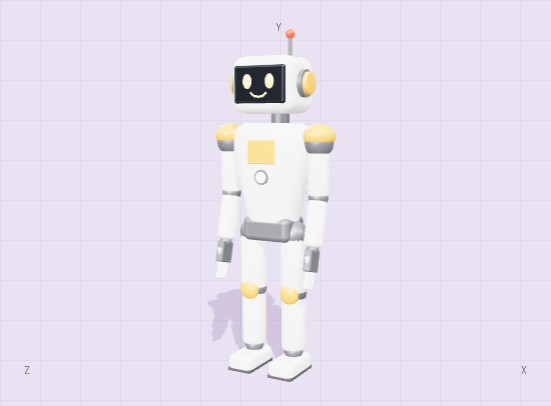

YOUR AGENT. AN EXTRA DIMENSION.
Less debugging.
More dimension.
The three.js toolkit for coding agents.
Check the code. Inspect the scene. Keep creating.
MCP serverCLIClaude Code pluginMIT
YOUR AGENT. AN EXTRA DIMENSION.
The three.js toolkit for coding agents.
Check the code. Inspect the scene. Keep creating.
